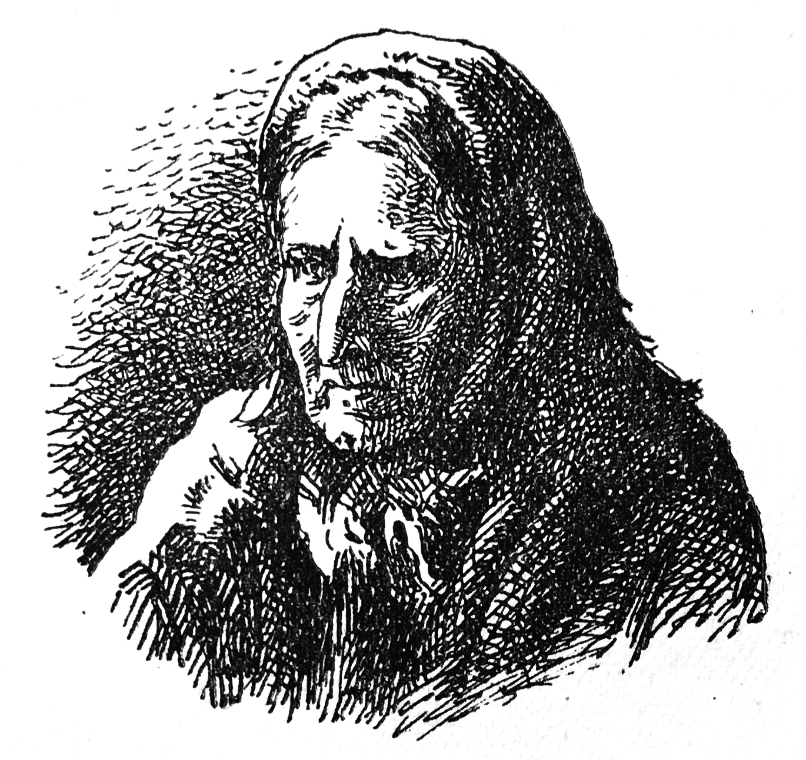

Daŭrigo pri la malfeliĉoj de la maljunulino.
«Mirigite kaj ravite ĉe la aŭdo de mia gepatra lingvo kaj ne malpli surprizite de la paroloj, kiujn eldiris tiu viro, mi respondis, ke ekzistas pli grandaj malfeliĉoj ol tiu, pro kiu li ĝemas; per malmulte da vortoj mi sciigis al li pri la abomenoj, kiujn mi spertis, kaj denove mi svenis. Li kunportis min en najbaran domon, ordonis, ke oni metu min en liton, ke oni donu al mi por manĝi, servis al mi, konsolis min, flatis min, kaj diris al mi, ke neniam li vidis ion pli belan ol min, kaj ke neniam li tiom bedaŭris tion, kion neniu povas al li redoni.
― «Mi naskiĝis en Napoli, li diris al mi; ĉiujare oni kastras du-tri mil infanojn; unuj pro tio mortas, aliaj akiras voĉon pli belan ol tiun de virinoj, aliaj foriras por regadi Ŝtatojn (↓1). Oni operaciis min tre sukcese, kaj mi estis muzikisto en la kapelo de S-ino la princino de Palestrina.
― «De mia patrino, mi ekkriis.
― «De via patrino! li ekkriis plorante; kio! ĉu vi estus tiu juna princino, kiun mi edukis ĝis ŝia sesjara aĝo, kaj kiu jam esperigis, ke ŝi estos tiom bela, kiom vi estas?
― «Ĝi estas mi mem; mia patrino estas je kvarcent paŝoj de ĉi tie, distranĉita en pecojn kaj kuŝanta sub amaso da mortintoj...
«Mi rakontis al li ĉion, kio okazis al mi; li ankaŭ rakontis siajn aventurojn, kaj sciigis min, ke kristana potenco (↓2) sendis lin al la reĝo de Maroko, por fari kun li kontrakton laŭ kiu oni liveros al li pulvon, kanonojn kaj ŝipojn por ke li helpu ekstermi la komercon de aliaj kristanoj. «Mia misio estas plenumita, diris tiu honesta eŭnuko; mi estas enŝipiĝonta por Ceŭta, kaj mi revenigos vin en Italion. Ma che sciagura d'essere senza c......!»
«Kortuŝite kaj larmokule mi dankis al li; kaj, anstataŭ veturigi min en Italion, li kondukis min al Alĝero, kaj vendis min al la guberniestro de tiu provinco. Apenaŭ mi estis vendita, ke tiu pesto, kiu rondiris Afrikon, Azion kaj Eŭropon, ekfuriozis en Alĝero. Vi vidis tertremojn; sed, fraŭlino, ĉu vi jam spertis peston?
― Neniam, respondis la baronino.
― Se vi ĝin spertus, daŭrigis la maljunulino, vi devus konfesi, ke ĝi superas tertremon. Ĝi estas tre ofta en Afriko; ĝi atakis min. Imagu la situacion de filino de papo, dekkvinjara, kiu en trimonata tempo spertis malriĉon, sklavecon, seksperforton preskaŭ ĉiutage, vidis sian patrinon kvaronigita, suferis malsaton kaj militon, kaj pestule mortiĝas en Alĝero. Tamen tiu pesto ne mortigis min, sed mian eŭnukon, la guberniestron kaj preskaŭ la tutan hareman virinaron.
«Kiam la unuaj difektegoj de tiu terura pesto malaperis, oni vendis la sklavojn de la guberniestro. Komercisto aĉetis min kaj kondukis min al Tuniso; li vendis min al alia komercisto, kiu revendis min en Tripoliso; el Tripoliso mi estis revendata en Aleksandrio, el Aleksandrio denove mi estis vendata en Smirno, de Smirno al Konstantinoplo. Fine mi apartenis al iu estro de janiĉaroj al kiu oni baldaŭ ordonis, ke li iru defendi Azov sieĝatan de la Rusoj.
«La janiĉarestro, kiu estis tre amaĉema viro, kondukis kun si ĉiujn siajn virinojn, kaj loĝigis nin en malgranda fortikaĵo, kuŝanta sur la Palus-Meotides, kiu estis gardata de du negraj eŭnukoj kaj de dudek soldatoj. Oni mortigis eksterordinaran kvanton da Rusoj, sed ili malavare repagis al ni. Azov brulis kaj dronis en sango (↓3), kaj oni ne atentis nek pri sekso, nek pri aĝo; restis nur nia malgranda fortikaĵo; la malamikoj provis venki nin per malsato. La dudek janiĉaroj estis ĵurintaj, ke ili ne cedos. La malsatego, kiun ili spertis, instigis ilin manĝi la du eŭnukojn, pro timo ne rompi sian ĵuron. Post kelkaj tagoj, ili decidis manĝi la virinojn.
«Ni havis tre pian kaj kompateman pastron, kiu faris al ili tre belan predikon, per kiu li persvadis ilin, ke ili ne tute mortigu nin. «Tranĉu, li diris, nur unu sidvangon al ĉiu el ĉi tiuj sinjorinoj, kaj vi havos tre delikatan manĝon; se vi estas devigataj denove fari la samon, restos al vi la sama provizo post kelkaj tagoj; la Ĉielo dankos al vi pro tio, kaj vi ricevos helpon.»
«Li estis tre elokventa; li persvadis ilin. Oni faris al ni tiun teruran operacion; la pastro aplikis al ni la saman balzamon, per kiu oni ŝmiras infanojn, kiujn oni ĵus cirkumcidis: ni ĉiuj estis mortiĝantaj.
«Apenaŭ la janiĉaroj estis glutintaj la manĝon, kiun ni estis al ili liverintaj, jen alvenas la Rusoj sur plataj ŝipoj; ne eĉ unu janiĉaro elsaviĝis. La Rusoj tute ne atentis pri la stato, en kiu ni estis. Ĉie estas francaj ĥirurgoj: unu el ili, kiu estis tre lerta, prizorgis nin; li resanigis nin, kaj dum mia tuta vivo mi memoros, ke, kiam miaj vundoj estis bone fermiĝintaj, li faris al mi amproponojn. Cetere, al ĉiuj li diris, ke ni devas konsoliĝi; li certigis, ke dum pluraj sieĝoj okazis sama afero, kaj ke tio estas leĝo de l' milito.
«Tuj kiam miaj kunulinoj povis marŝi, oni irigis ilin al Moskvo. Kiel lotaĵo mi trafis en la manojn de nobelo, kiu faris el mi sian ĝardenistinon, kaj kiu donis al mi ĉiutage dudek vipobatojn. Sed post du jaroj tiu sinjoro kaj tridek aliaj nobeloj estis radŝirataj pro kelkaj kortegaj ĉikanoj; mi profitis ĉi tiun aventuron kaj forkuris; mi transiris la tutan Rusion; dum longa tempo mi estis drinkeja servistino en Riga, poste en Rostok, en Vismar, en Lajpzig, en Kasel, en Utreht, en Lejden, en Hag, en Roterdam: mi maljuniĝis en mizero kaj en malhonoro, havante nur duonan postaĵon, ĉiam memorante, ke mi estas filino de papo; centfoje mi volis min mortigi, sed mi ankoraŭ ŝatis la vivon. Tiu ridinda malforto estas eble unu el niaj plej pereigaj inklinoj: ĉu ja estas pli granda stultaĵo ol voli senĉese porti ŝarĝon, kiun oni ĉiam volas ĵeti teren; havi abomenon por sia vivo, kaj voli ĝin konservi; resume karesi la serpenton, kiu formanĝas nin, ĝis kiam ĝi estas formanĝinta al ni la koron?

La Maljunulino
«En la landoj, kiujn la sorto igis min travojaĝi, kaj en la drinkejoj, kie mi estis servistino, mi vidis eksterordinaran nombron da personoj, kiuj havis abomenegon por sia ekzisto; sed mi vidis nur dek du, kiuj memvole faris finon al sia mizero: tri negroj, kvar Angloj, kvar Ĝenevanoj kaj unu germana profesoro nomita Robek (↓4).
«Laste mi fariĝis servistino ĉe la judo don Isaĥar; li metis min je via dispono, mia bela fraŭlino; mi ligis min al via sorto, kaj mi estis pli okupata per viaj aventuroj ol per miaj. Mi eĉ neniam parolus al vi pri miaj malfeliĉoj, se vi ne incitus min iomete, kaj se ne estus kutimo sur ŝipo fari rakontojn por sin distri. Fine, fraŭlino, mi havas sperton, mi konas la homojn; donu al vi distron, instigu ĉiun pasaĝeron, ke li rakontu pri sia vivo; kaj se troviĝos unu sola, kiu ne ofte malbenis sian ekziston, kaj kiu ne ofte diris al si, ke li estas la plej malfeliĉa inter la homoj, ĵetu min en la maron kun la kapo antaŭen.»
(↑1) Aludo al Karlo Broski (itale: Carlo Broschi) alnomita Farinelli, kiu naskiĝis en 1705, mortis en 1782. Li estis kastrita kaj fariĝis unu el la plej famaj kantistoj de Italio. En 1736 li iris en Hispanion, fariĝis favorato de la reĝoj Filipo la V kaj Ferdinando la VI kaj ludis tre gravan politikan rolon. ― Trad.
(↑2) Dum la milito pro la heredo de Hispanio, pluraj kristanaj potencoj (Portugalio interalie) petegis la helpon de Mulej-Ismael. ― Trad.
(↑3) La urbo Azov fakte estis sieĝata de la Rusoj dum tuta jaro kaj kapitulacis en 1696. ― Trad.
(↑4) Germane: Robeck; li verkis latine libron per kiu li faris apologion pri memmortigo, kaj sin dronigis en la rivero Veser ĉe Bremen dum la jaro 1735.